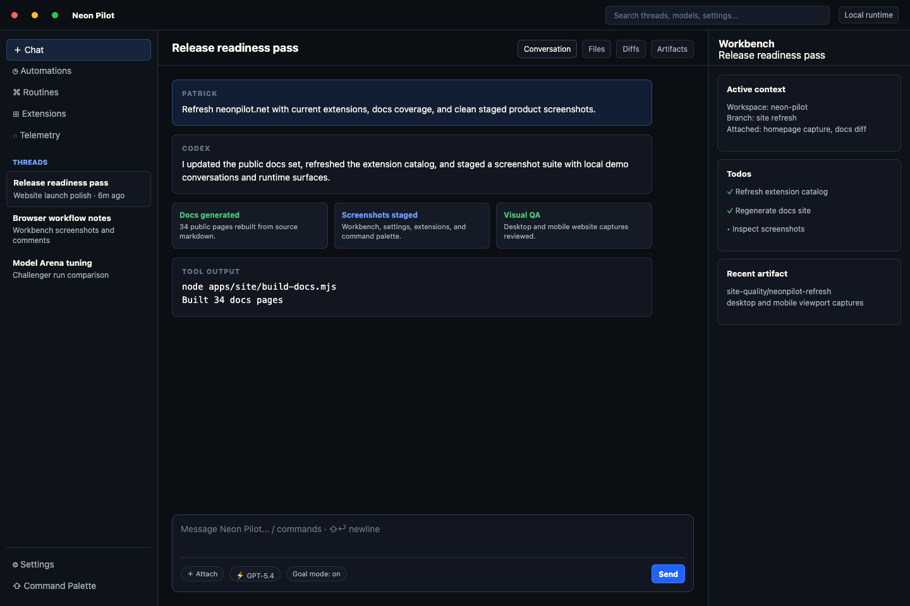

Extension-first
Commands, tools, pages, panels, and workflows live in extensions.
 Neon Pilot
Download
Neon Pilot
Download
Neon Pilot gives agents persistent conversations, tools, background work, extensions, and knowledge that survive beyond a single chat session.
Built for developers who want their agent workspace to grow with the work, not wait for the next product release.
Commands, tools, pages, panels, and workflows live in extensions.
Automations, persisted runs, follow-ups, and scheduled work keep moving.
Use files, instruction layers, skills, projects, and synced knowledge as context.
CI triage ready

Neon Pilot keeps core small. Product workflows become system or user extensions with manifests, commands, tools, UI, settings, and docs.
Learn more →Daemon-backed automations, persisted runs, subagents, scheduled tasks, deferred resumes, and follow-ups keep work durable across restarts.
Learn more →Attach files, folders, generated context, instruction files, skills, and git-backed knowledge so agents can carry history.
Learn more →


Self-extension lifecycle
Neon Pilot is more than a coding agent in a chat box. When your workflow changes, the capability can become a real extension: command-backed, documented, testable, and available again next time.
Durable runtime
Conversations, runs, automations, command surfaces, model settings, and extension services all share the same local desktop runtime instead of disappearing when a single response ends.
Context and knowledge
Use the composer, mentions, attached files, generated context, projects, skills, and git-backed knowledge base sync to make each conversation aware of the work around it.
Fully open source under MIT. Available on macOS today.